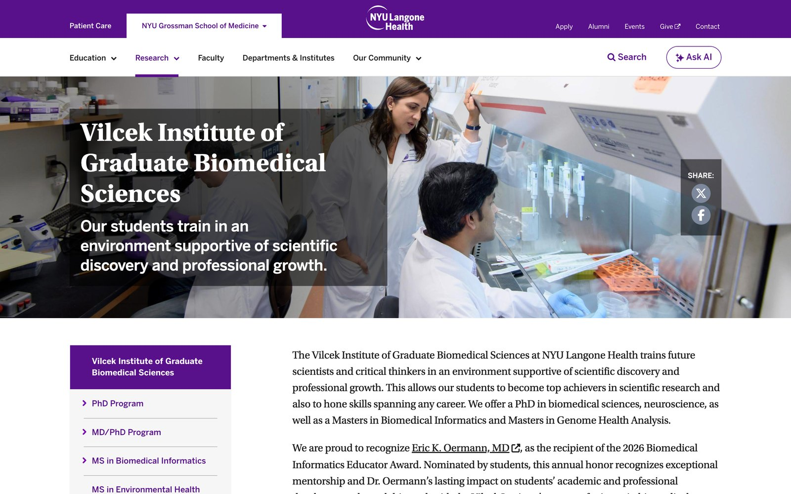
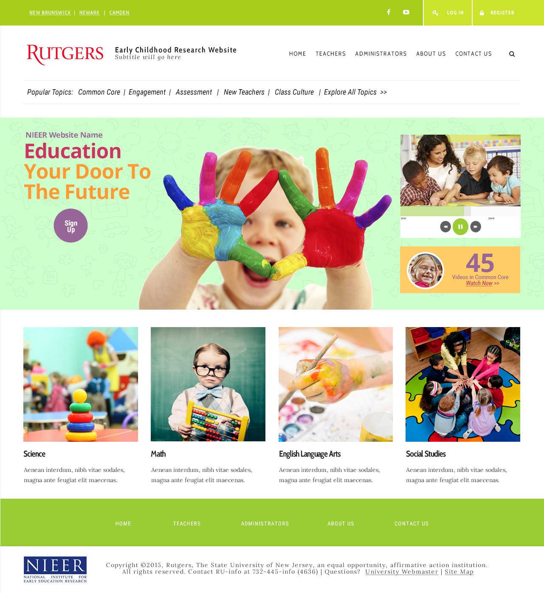
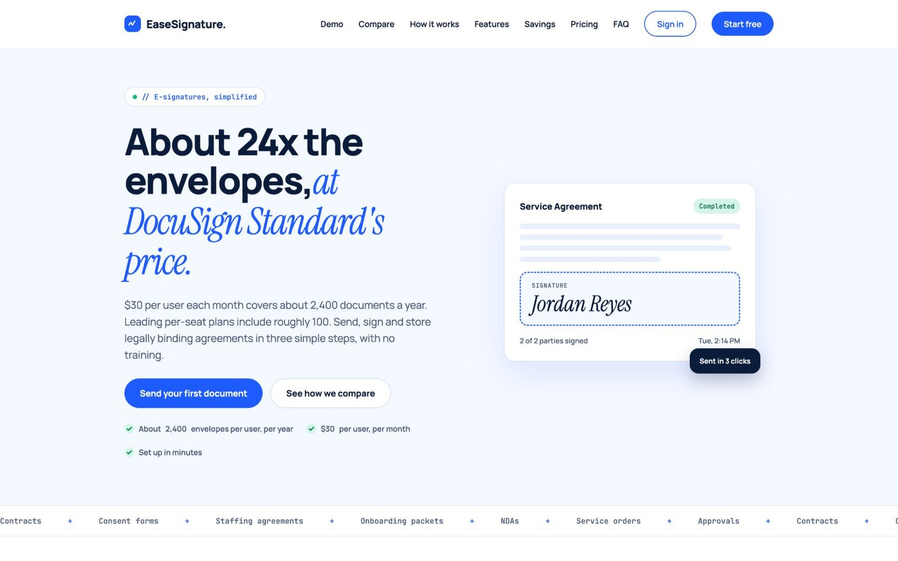
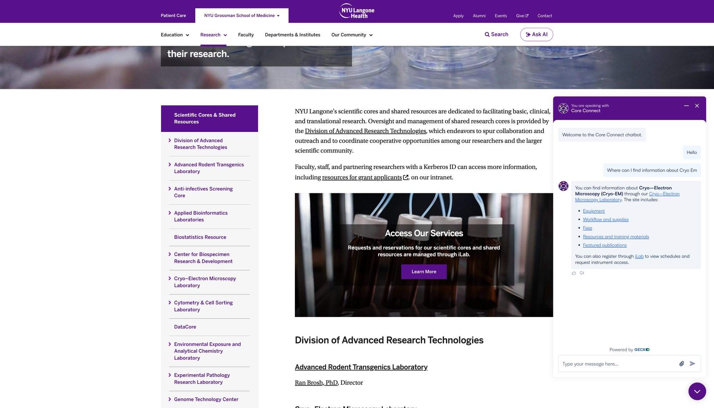
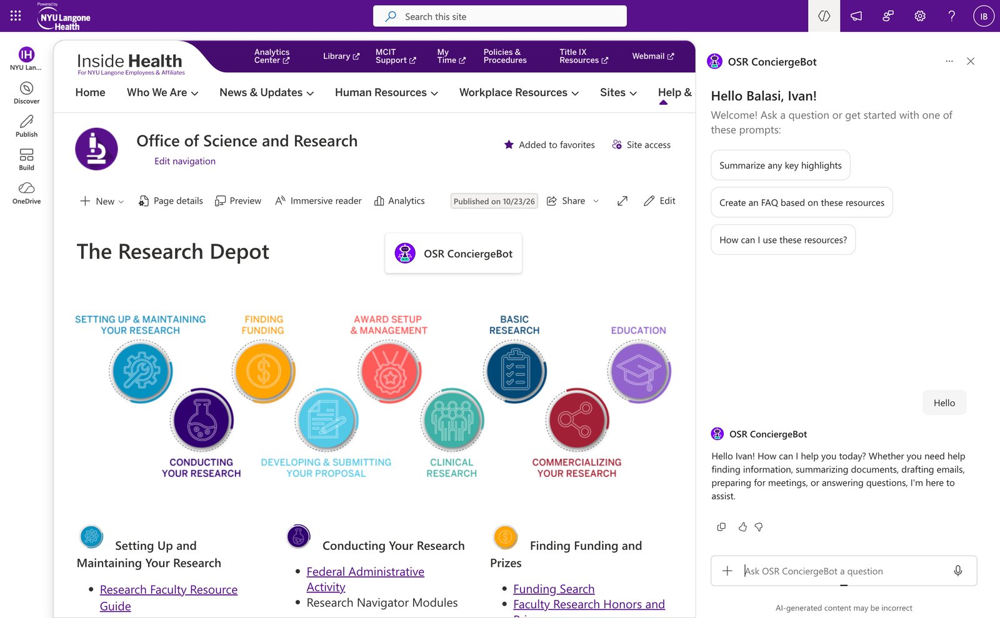
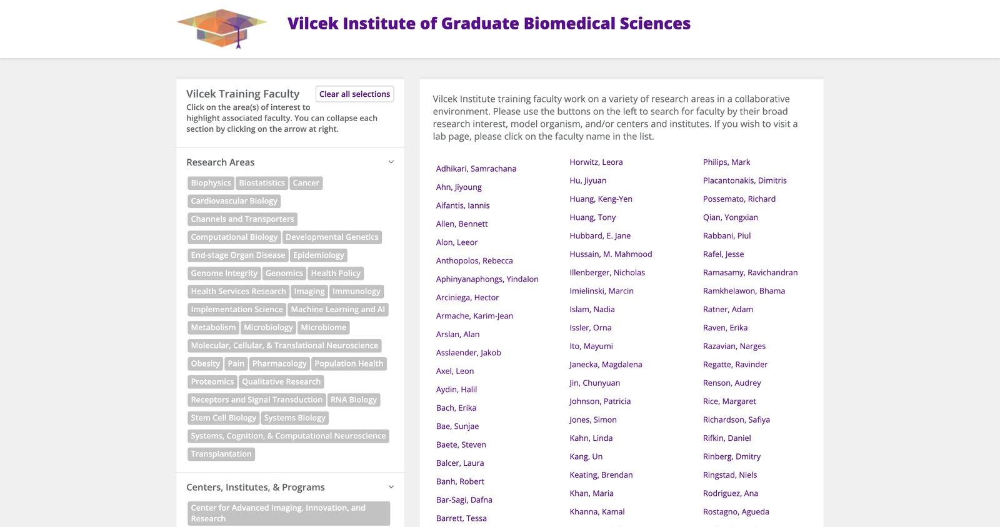
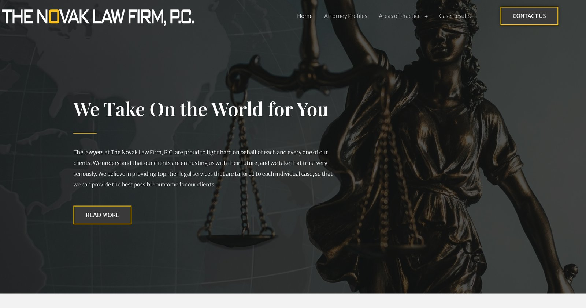

Web work, mostly for science.
Public sites, SharePoint intranets and chatbots for NYU Langone Health's Office of Science and Research, a few sites for outside clients, and an archive of earlier work.
Project index
Showing 22 projects
-

Vilcek Institute website
Several redesigns and the day-to-day running of the Vilcek Institute site, including the programs offered, events, admissions and faculty pages.
Visit the live site (Vilcek Institute, opens in a new tab) -

Video platform for early childhood educators
A responsive video website for educators' professional development, from research and wireframes to launch, with an admin panel for content and users.
Read the case study -

EaseSignature
Value-priced e-signature software with roughly 24x the document allowance of major competitors. Built with AI-assisted development.
Visit the live site (EaseSignature, opens in a new tab) -

Cores Chatbot
Core Connect, an AI chatbot on the Scientific Cores & Shared Resources site, helps researchers get answers about NYU Langone's core facilities without digging through pages.
-

OSR ConciergeBot
OSR ConciergeBot is an AI chatbot we added to all Office of Science & Research intranet sites. Instead of digging through menus, site users ask a question and the bot points them to the right information and resources.
-
RECOVER website
Website for RECOVER (Researching COVID to Enhance Recovery), inviting people with long COVID to sign up for studies.
Select the image to see the full page. -

Find a Lab
A directory of Vilcek Institute training faculty. Visitors filter by research area, model organism or center and institute, then click a name to visit that lab's page.
Visit the live site (Find a Lab, opens in a new tab) -
Organoid Image Bracket (BracketBash)
A March Madness–style voting app for OSR. Visitors vote in head-to-head matchups of striking organoid images, round by round, until one champion is left. A live bracket and leaderboard show how the tournament is going, and an admin area runs it.
Vote counts are blurred on purpose. Select an image to see it full screen. -
Voicebank.net
Web design for Voicebank.net, a voice over casting network. The About Us page tells the company story with a video band, services, key numbers, the team and customer testimonials. I also created the UI design for the site's admin panel.
Select the image to see the full page. -

The Novak Law Firm, P.C.
Website for The Novak Law Firm, built to meet ADA accessibility standards (WCAG).
Visit the live site (Novak Law Firm, opens in a new tab) -
NYU Langone Office of Science and Research
OSR website redesign.
Select the image to see it full screen. -
OSR concept design
Concept design for the Office of Science and Research site.
Select the image to see it full screen. -
NYU Langone mobile concept
Concept for the mobile version of the Office of Science and Research site.
Select the image to see it full screen. -
Ricoh USA corporate website
2008–2010. Site for the North and South American sales and marketing unit of Ricoh.
Select the image to see it full screen. -
Ricoh intranet 2010
Redesign concept for the Ricoh intranet, reworked around changes in the organization.
Select the image to see it full screen. -
Ricoh USA intranet 2009
Company intranet for Ricoh USA.
Select the image to see it full screen. -
Kraft product page
UI design and front-end coding.
Select the image to see it full screen. -
ExpoTV CSR portal
HTML, CSS, jQuery and PHP.
Select the image to see it full screen. -
Pantene Facebook promo
Facebook promo ad, created for a freelance project.
Select the image to see it full screen. -
Mindseal Systems
Website for an IT solutions provider.
Select the image to see it full screen. -
Anna Balasi portfolio
Responsive portfolio built with HTML5, CSS3 and jQuery.
Select the image to see it full screen.
No projects match that.
Try another word, or clear the search and filters to see everything.
Also built and maintained
Sites, intranets and web apps I build or run for groups across NYU Langone's research enterprise, plus freelance work for outside clients.